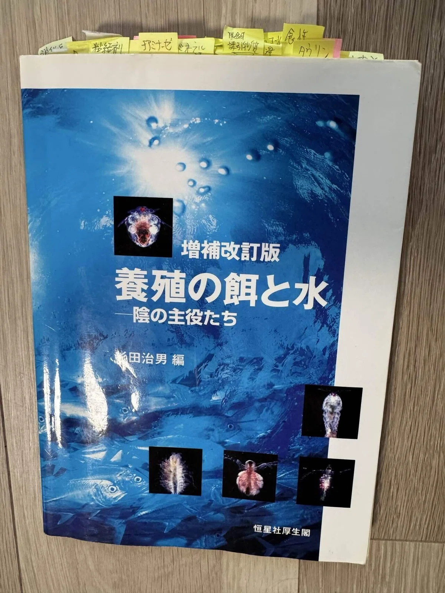
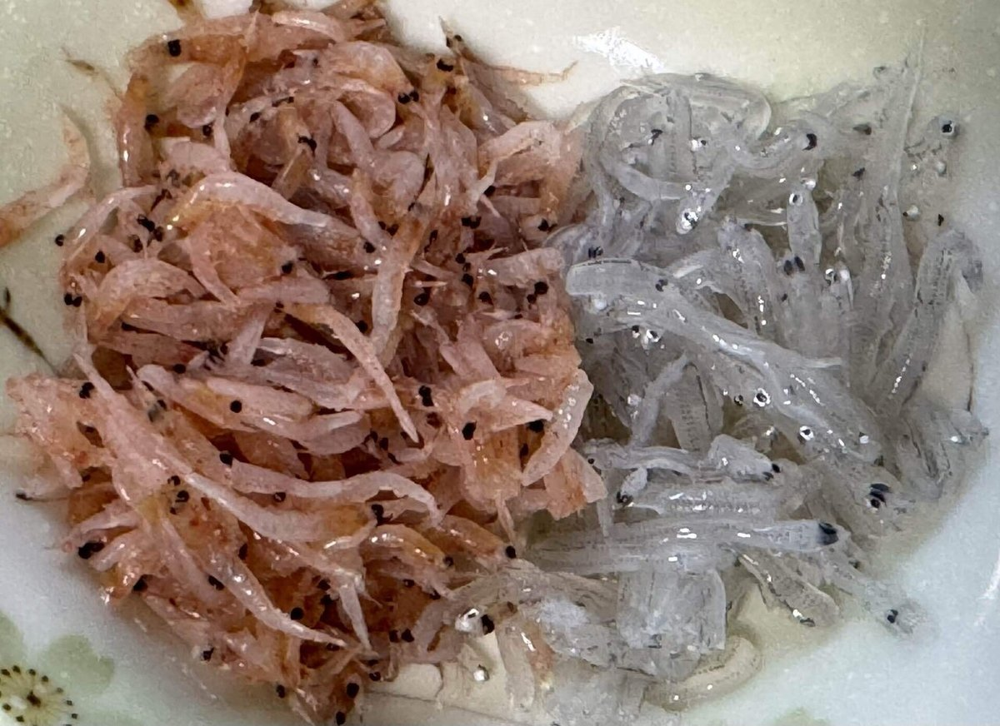
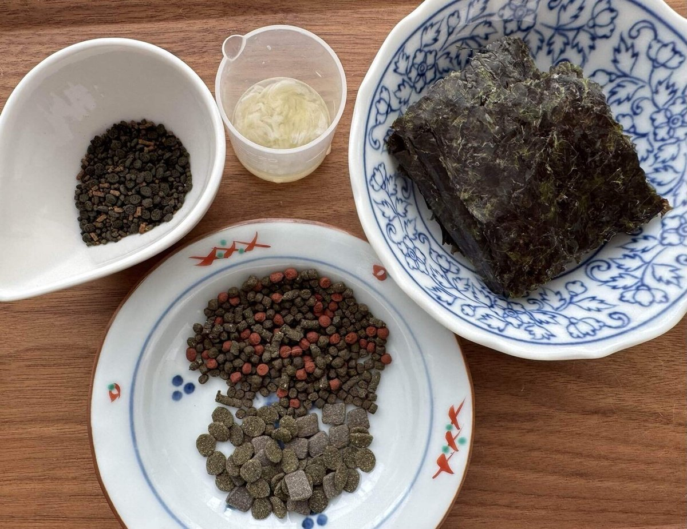

【海水魚の餌】 第２回：
海水魚のための餌とは何か？
Published: 2026.02.11
前回は、人工餌の限界（デメリット）についていろいろと書かせていただきました。
生餌のススメ 第１回 人工餌の限界を探る
その冒頭でもお話しした通り、私自身、現在の冷凍餌中心の給餌スタイルに至るまでには、さまざまな試行錯誤を重ねてきました。
旧ブログの最後の更新は、2016年のお正月。
あれから、もう9年半も経つのですね。
ちょうどあの頃は、まさに試行錯誤の真っ最中だったのだと思います。
その後、ブログの更新はすっかり止まってしまいましたが──
実は今と変わらぬ熱量で、「海水魚を健康で長生きさせたい」一心で、
日々いろんなことに悩み、学び、そして試してきました。
今回は、その歩みの一部をご紹介したいと思います。
あ、こういう話を始めるとたまに「無添加・自然派ママかよ（笑）」みたいな視線を感じることもあるんですが、ご安心ください、
私は魚のためなら科学も添加物も大歓迎です（笑）。
暖かく応援頂けたら嬉しいです。
１．海水魚飼育10年で見えた壁
海水魚の飼育を始めて10年ほど経った頃。ある程度の経験を積み、手ごたえも感じ始めていた反面、どうしても越えられない「壁」にも直面していました。
たとえば──
- 長生きしない（大事なチョウチョウが数か月～3年以内に落ちてしまう）
- 朝まで元気に餌を食べていた個体が、夕方には突然死する
- 色が褪せる
- 体型が自然下の個体と大きくかけ離れてくる
- 食べても食べても痩せていく
- 成長が遅い個体がいる
- HLLE（頭部や側線部の皮膚、各鰭の欠損）が現れる
- 遊泳異常（ふらつき・旋回・沈降・バランス喪失など）
- エラの肥厚
- 失明や視力の低下
- 骨格の異常
- 腹部の膨満や陥没
- 昏睡状態（眠ったまま動かない）
「これらの不調は、飼育環境に原因があるのかもしれない」
そう考えるようになった私は、2013年に新居へ移ったのを機に、念願だった“水槽部屋”を設け、飼育環境改善に本格的に取り組み始めました。
具体的な対策としては：
- 濾過の強化
- 水温の安定管理（低めの水温設定）
- 昼夜サイクルの制御（照明タイマー）
- 溶存酸素の過剰なくらいの確保
- 強めの水流の維持
- 底砂の変更
- 混泳メンバーの調整
- 病原菌を抑制する環境づくり
- ライブロックやプランクトンによる微生物多様性の維持
- 新魚導入時の検疫・トリートメントの徹底
（当時は「これがベストだ」と思いやっていましたが、その後も改良を重ね続けています）
ところが──それでも、同じようなトラブルが、飼育年数の経過とともに再び現れることもありました。
「環境の改善だけでは、すべてを解決できないのでは？」
そう思い始めた私は、次第にアクアリウム雑誌やネットの情報だけでは限界を感じるようになり、魚類の専門書籍や研究論文を探して読むようになっていきました。
そんな中で、特に衝撃を受けたのが、恒星社厚生閣の『養殖の餌と水』という一冊です。
内容は、魚の栄養学では普通のことなのかも知れませんが、当時アクアリウム村にどっぷり浸かっていた私には、見逃してしまうような視点が盛りだくさんでした。
何度も読み返し、それ以来、私の“バイブル”となっています。

「やっぱり、私が与えている餌に問題があるのかもしれない──」
実はそれ以前から餌には強い関心を持っており、魚の体は食べたものでできていることを常に意識して、さまざまな人工餌を試していました。
給餌の時間は、みんな寄って来て”餌くれダンス！”
魚の愛らしい表情を間近で感じられる、何よりも楽しいひとときでした。
でも──まさか海水魚にとって人工餌そのものに、
こんなにも多くの“限界”があるなんて。。。
魚種や成長段階で消化能力や栄養要求の違いがあり、人工餌だけではまかなえない複数の問題点が見えて来ました。
（※初めて読まれる方は前回の”人工餌の限界を探る”をご一読ください）
では、どんな餌が良いのか？
つきつめれば、本来の魚種ごとの食性を調べ、自然下同様の活きた餌生物を水槽内に再現することが理想だとは思います。
でも、それは現実的にはとても難しい。せいぜい、たまにプランクトンパックや生きたヨコエビを入れてあげるくらいです。
（※ 野生の海水魚の胃内容物調査論文を読み漁っていた時期でもあります）
そこで、人工餌の弱点を補える手段として、海産物由来の『冷凍餌』を活用するという選択肢に辿りつきました。
２．変化のきっかけ──“常識”が揺らいだ瞬間たち
思い返せば──海水魚飼育を始めた頃から、「栄養バランスの整った人工餌に、なるべく早く餌付けることが正しい」そんな“常識”が、飼育書やネット掲示板、ショップなどで当たり前のように語られていました。
私もそれを疑うことなく、素直に受け入れていたんです。
でも実は当時から、冷凍餌を中心に与えているベテランの飼育者が少なからずいて、冷凍餌を推奨するショップさんもありました。
今になって思えば、彼らは経験的に人工餌の限界を理解し、冷凍餌の方が魚の調子が良いことを“肌で知っていた”のかもしれません。
当時の自分のブログを読み返してみると──それでも、やっぱり、どこかビクビクしながら、少しずつ冷凍餌へと切り替えていった様子が残っていました。魚のことになると慎重なところは、今も昔も変わらないなぁと思わず苦笑いしてしまいます（笑）
そんな中、私の背中をぐっと押してくれた出来事がいくつかあったのです。
①水族館で見た「ヤリカタギ」
ある日、とある水族館を訪れたときのこと。運良く、熱帯性海水魚水槽の給餌シーンを見る機会に恵まれました。
その中に、ひときわ丸々と太ったヤリカタギの姿が！
ヤリカタギと言えば！！アクアリウム界隈では人工餌では「餌付けが難しい」「太らない」「大きくならない」「長期飼育も困難」と、まさに“難しいだらけ”の代表的なポリプ食チョウチョウウオです。
そのヤリカタギが、飼育員さんが投入した「細かく刻まれたエビ・イカ・貝など」や「オキアミ類」を、勢いよくついばんでいる姿に目を奪われました。
考えてみれば、水族館で人工餌をパラパラ撒いている給餌風景って、あまり見たことがありませんよね？
それもそのはず、調べると殆どの水族館では「生餌」主体の給餌が一般的だからなんですね。
② 養殖現場での「生餌率」
ちょうどその頃、近畿大学のクロマグロ養殖の話題がニュースでよく取り上げられていて、クロマグロ用の人工飼料（ペレット）については研究途上で、「生餌主体で育てている」、という記述を見たとき、あれ？と思ってネット検索してみたんです。
「人工飼料だけで育てる」という段階にはまだ程遠い状況だったんですね。
しかし、マグロの詳しい投餌内容の資料は見つからなかったのですが、代わりにハマチやマダイの「投餌料データ」に辿り着いて、正直びっくりしました。
この２種は日本では代表的な養殖魚で、それぞれに栄養要求に合わせた専用の人工飼料の研究開発が最も進んでいるイメージが強かったので、
当然もう養殖業では、ほとんど人工飼料で賄われているのだろうと思っていたのですが──
実際には、生餌の投餌量が想像以上に多く、当時の私はその現実に衝撃を受けました。具体的な数値は覚えていませんが、「人工飼料が主流」というイメージとは裏腹に、まだまだ生餌への依存が続いているという事実。
この“現場のリアル”が、私の認識を大きく覆したのです。
ちなみに最近の状況はどうか？と調べたところ、令和２年（2020年）の国の統計でも、生餌の投餌量が全体の4割以上を占めていることが確認できました。※データ出典：
「海面養殖業生産統計調査（令和2年）」
③ MACNAで見た「冷凍餌の世界」
そして決定打となったのが、2015年秋に渡米して参加した、北米最大のマリンアクアリウムの祭典「MACNA（Marine Aquarium Conference of North America）」です。
延べ数万人が訪れるこのイベントは、海洋科学者や業界著名人によるカンファレンスや数百社に及ぶ企業ブースなど、科学とマリンアクアリウムが交差する一大イベント。
その中で海水魚の餌メーカーさんも多数出展されていました。
そこで驚かされたのが、冷凍餌のバリエーションの豊富さでした。
各社が大きな業務用冷凍庫をブースに設置し、色とりどりの冷凍餌をズラリと並べて展示していたんです。
あのキョーリンさんも「”Hikari”ブランド」で出展されていましたが、日本国内よりもはるかに多彩な冷凍餌のラインナップ！まさに、目が覚めるような体験。
このとき、日米の「海水魚の餌」事情がこんなにも違うんだと、実感しました。
確かにアメリカのネットコミュニティーなどに情報を拾いに行くと冷凍エサをメインに与えている人がとても多い印象でした。
現在インスタなどで活躍されてる海外の有名なアクアリストさん
──たとえば Polo Reefさん や Angelica reefさん, Viking Reefさん(←クリックしたら投稿に飛びます） などの給餌動画を見ても、生餌をメインにしている事がうかがえます。魚の体色も体型も状態が良いのが分かります。
水族館や養殖業といった「プロの現場」では、人工飼料に限界があることがすでに広く認識されているように感じます。 そして米国では、MACNA（主催：MASNA）のような、科学とアクアリウムが融合するイベントの存在によって、海水魚の栄養学や生理学の観点から餌を選ぶ文化が育まれているのかもしれません。
……そんな体験の積み重ねが、私自身の給餌スタイルを大きく変える“原動力”となったのです。
しかし。。。こうやって振り返ると気づくのが遅い（笑）
出来ることなら「何で？10年間も気づかないんだよ！！？」って、
当時の私を叱ってやりたい気分です（笑）。
思えば、それ以前にも何度も“気づきのチャンス”はあったんです。
生餌で長生きさせていた先輩たち、水族館で何度も目にした給餌シーン・・・
もっと早く魚類の栄養学や生理学の本を手にとって読んでいたなら・・・
でも、「人工餌に餌付けるのが当たり前」という思い込みに、すっかり縛られていました。
問題意識を持って、初めて情報として脳に入ってくるんだなと痛感しました。
３．給餌スタイル確立までの記録
この章では、その変化の遍歴を、簡単に時系列で振り返ってみたいと思います。
これ以前の約１１年間は人工餌をメインに、市販の冷凍餌を週に１～２回おやつ程度に与えてる感じでした。
2015年初旬
桜えび等と人工餌と混ぜてモイストペレット作成開始
2015年7月
魚介類をミンチにして海藻の粘り気をつなぎとして自家製冷凍ハンバーグを作成。食いは良好。この餌と人工餌と併用。
2015年9月
渡米。MACNAに参加。衝撃を受けて帰国。
冷凍餌メインへ全面切り替えを決意
海に囲まれて漁業が盛んな日本なのに何故に海産由来の冷凍餌料がないのか？と色々調べてるうちに、養殖業でも盛んに使用されているツノナシオキアミ（イサダ）、に注目するようになりました。
詳しくは「私がツノナシオキアミを魚たちの主食に選んだ理由」でお話しています。
2015年10月以降
まずは釣具メーカーさん数社に電話して添加物なしのサビキ用のアミエビブロック（ツノナシオキアミ）を入手。しかし傷みが激しく給餌するのは断念。。。
食用を探すも市販品は見つからず。
2016年2月
ツノナシオキアミの漁期が2～4月と知り宮城～岩手の漁協に何件も直接電話をして食用のものを分けて貰えないかと交渉。
2016年4月
漁協に紹介頂いた女川の業者さんより食用の無加水冷凍のツノナシオキアミ（1年分）を初めて入手。
使い始めて最初に実感したのは、人工餌オンリーだった頃に比べて、冷凍餌のみを与えた時の糞の量が明らかに減ったことでした。
これは、前回の「人工餌の限界を探る」の中でも触れたように、海水魚の中には人工餌中の加熱タンパク質や穀類の消化がうまくいかず、未消化・未吸収の成分が糞として排出されていた事を意味しているのかもしれません。
そしてその後、魚たち自身にも変化が現れました。
とくに、チョウチョウウオやベラ類などで背肉が痩せ気味だった個体や、泳ぎに覇気がないと感じていた個体が、少しずつ改善していく様子が見られるようになったのです。
2017年2月
1年間使用した女川のツノナシオキアミに手応えを感じたので継続購入をお願いしたがあっさり断られ途方にくれる。。。
この頃、自家製の冷凍ハンバーグは色々と懸念があり使用中止に。
この辺り詳しくは「冷凍餌加工に伴うリスクⅠ・冷凍餌加工に伴うリスクⅡ」で説明しています。
2017年3月～
再び各地の漁業関係者に電話で問い合わせ開始。
けんもほろろに断られる中、Facebookで「人の食用をCAS冷凍」してるという三陸とてたて市場さんの投稿を目にして電話。分けて頂けることに！！！
2017年4月
初CAS冷凍ツノナシオキアミを入手。
それから約１年間ツノナシオキアミのみを与える試みをしました。
その間、死亡する個体は減少。海水魚の栄養要求には充分応えられるのではと実感する。
2018年4月
継続購入を決定。
一部の魚に微妙な痩せが発生したので、同じ三陸とれたて市場さんのシラスを購入したり、試験的に凍結していただいた魚卵を使わせて頂くようになりました。
そして痩せの傾向が草食魚にも見られたので植物質が足りないのかな？と思い板海苔（焼いてないもの）や草食用人工餌をおやつ程度に追加するようになったのもこの頃です。
詳しくは海藻質補給は？で詳しく述っています。


以後、約８年間、我が家の海水魚の給餌スタイルとして定着。今に至ります。
2021年3月
三陸エンリッチメント研究室さんのHPにてCASの冷凍餌料の通販が開始された事で安定的に購入する事が出来るようになりました。
いま振り返ると、冷凍餌を模索する前のあの頃に感じていた海水魚飼育の「壁」は、少しずつ崩れていったように思います。
長い道のりでしたが、それでも「冷凍餌に切り替えたからこそ見えた景色」が、確かにありました。
長く飼えなかった魚が色鮮やかなまま長く飼えるようになったり
ぽっくり死んでしまう事もその他前述したような様々なトラブルも減りました。
お迎え直後の個体や採取してきた幼魚などの生存率が飛躍的に上がったのも大きな功績のひとつです。
あれは餌に由来する栄養性疾患だったのではないか・・・
生き物を飼う上での「餌」の果たす役割の大きさにも改めて気づかせてもらいました。
あの頃夢見た“魚の健やかな姿”が現実味を帯びるようになりました。
４．おわりに
アクアリウムの情報には、実は書かれていないことがたくさんあります。
それが飼育に当たって大事な事であっても＿＿
問題意識を持ち、手探りでも自力でたどり着こうとしない限り、見えてこない。そんな“試練”が、飼い主の前には立ちはだかっているように思います。
「海水魚の餌」についてもそうです。
でもね、そこは日本、四方を海に囲まれた国。漁業や養殖も盛んで、それぞれの分野で魚類研究も活発に行われています。水産も含め海洋生物学を学べる大学も複数あり、「教科書となる書籍」や「研究をまとめた論文」も豊富に存在しています。なのでその気になれば誰でもたどり着くことは出来るんです。私みたいな学があるとは言えないおばさんにも、です（笑）
魚の栄養だけでなく、生理・生態・病気などを幅広く学び（※心の声：浅くてもいい。難しい理屈は私もよく分かっていません😅）、少しでも知識を広げること。
これを「知って飼う」か「知らずに飼うか」で、魚との向き合い方や対処・結果もまったく違ってくる──私はそう感じています。
「海水魚を長く、健康に飼う」ための鍵は、まさにそこにあるのかもしれません。
私が完全に冷凍餌メインの給餌法に切り替えて、９年が経ちました。
そして、現在のスタイルに落ち着いてからは、８年になります。
この歳月は魚の栄養や消化、生理に関する事柄を自分なりに学び、人工餌と冷凍餌のメリット・デメリットを納得したうえで実践を続けてきた時間でもあります。
そろそろその経過や手応えをお伝えしてもいい頃あいだと思い、こうして筆を執っています。
次回は海水魚の餌としての具体的な「生餌のメリット」について、前回の人工餌のデメリットとの対比も交えてお伝え出来たらなと思います。
他のコラムも読んでみませんか？
＼ 記事が良かったらポチッと！ ／
💬 感想・コメントはこちらから
- © Emi - Scientific Aquarium
- Design: HTML5 UP